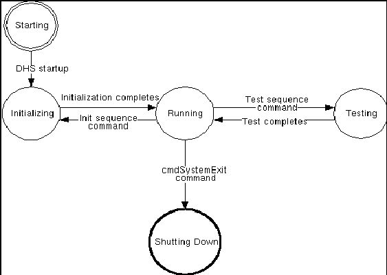

The overall state of DHS is the state of the least functional DHS subsystem.
The subsystem's state can also be viewed quickly from the main window of the Console. The box to the right of each identifier contains the subsystem's state. See Subsystem Overview for more information.
| Value | Interpretation |
|---|---|
| SHUTTING DOWN | The system is in the process of shutting down, or is shut down. |
| STARTING | The system is being started. |
| INITIALIZING | System is started but not running yet, "reset" or "init" command has been issued on the system. |
| TESTING | The system is performing a self test as a result of a "test" sequence command being issued. |
| RUNNING | The system is in its normal operating state, and it is ready to accept connections and commands from other systems. |
